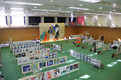
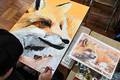

美術部
美術部では、個々の目標に沿って作品を制作します。観察力や描写力を鍛える静物デッサンや石膏デッサン、ポスターや絵画制作など、それぞれがテーマを決め、時間をかけて質の高い作品を完成させていきます。英明祭での作品展示や、各種公募展への出品など、精力的に活動しています。
顧問：秋山真吾 前堀浩二
主な受賞歴
・うどん県書道パフォーマンス大会ポスター原画採用(2022,2023,2024)
・第15回8020運動ポスター 優秀賞(2023)
・瀬戸内デザイングランプリ2023 入選(2023)
・話題になるうどんパッケージデザインコンテスト自由部門 優秀賞・佳作(2023)
・令和4年度愛鳥週間ポスター原画コンクール 特選（2022）
・令和4年度緑化ポスター原画書道コンクールポスター原画の部 特選(2022)
・第2回CDC高校生デザインコンテスト2022キャラクターデザイン部門 グランプリ(2022)
・香川県障害者芸術祭2022 イメージキャラクターオブジェ・看板製作(2022)
・令和3年度愛鳥週間ポスター原画コンクール 入選（2021）
・第9回香川県公園絵画コンクール 入選（2021）
・河原デザインコンテスト2021「夢」大賞（2021）
・河原デザインコンテスト2021 in Summer 優秀賞（2021）
・高校生デザインコンテスト2021 シューズ部門 入賞（2021）
・若きイケメン家康の姿を描こうコンテスト
手書き部門 金賞・銀賞・銅賞／デジタル部門 金賞（2021）ほか
・平成31年用 国土緑化・育樹運動ポスター原画コンクール 入選（2019）
・平成31年度香川県高等学校総合体育大会ポスター等図案募集 優秀賞（2019）
・令和元年度青少年健全育成作品展 最優秀作品（2019）
・第25回全国かまぼこ板の絵展覧会 優良賞（2019）
・第7回香川県公園絵画コンクール 最優秀賞（2018）
・平成30年度青少年健全育成作品展 最優秀作品（2018）
・かがわ文化芸術祭2018ポスター原画展 最優秀賞（2018）
・第4回うたづアートアワードビエンナーレ2018 絵画部門入選（2018）
・第8回昭和館高校生ポスターコンクール 佳作（2016）
・第5回香川県公園絵画コンクール 最優秀賞（2016）
・平成27年度愛鳥週間ポスター原画コンクール 入選（2015）
・第21回香川県高校生デザイン大賞 部門賞（2015）
・第8回全国高校生現代アートビエンナーレ 絵画イラスト入選（2015）
・KJCデザイングランプリ2012 準グランプリ（2012）
主な進学先
東京藝術大学 多摩美術大学 武蔵野美術大学
沖縄県立芸術大学秋田公立美術大学 尾道市立大学
嵯峨美術大学 京都精華大学 大阪芸術大学 ほか


陸上競技部 バスケットボール部(男子) バスケットボール部(女子) バレーボール部(男子) バレーボール部(女子) 卓球部 ソフトテニス部 サッカー部 バドミントン部 柔道部(男子) 剣道部 テニス部 硬式野球部 吹奏楽部 図書部 放送部 写真部 茶道部 華道部 書道部 美術部 コーラス部 食物研究部 服飾手芸部 ダンス部 チアリーディング部 大学入試問題研究部 科学研究部 英語研究部 囲碁・将棋部 ビジネス研究部 IT・パソコン部 進路研究部 数学研究同好会 文芸同好会 漫画研究同好会 園芸同好会 筋トレ同好会 軽音同好会